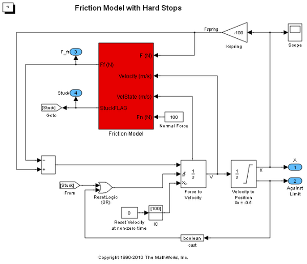
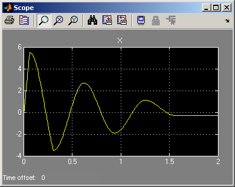
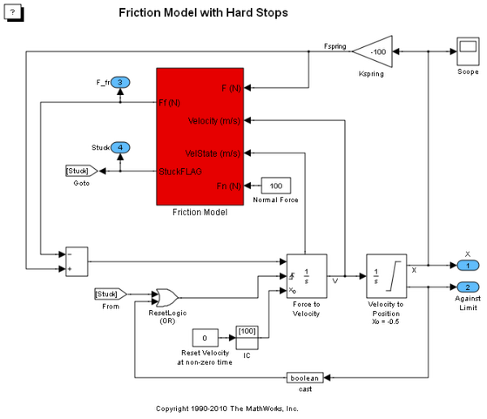
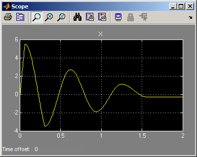

急ブレーキの摩擦モデル
このデモでは、Simulink® で摩擦をモデル化する 1 つの方法を示します。 このモデルの 2 つの積分器でシステムの速度および位置が計算され、その結果が摩擦モデルに適用されて摩擦力が計算されます。
シミュレーションを実行すると、初期条件応答が Scope ブロックで表示されます。
 このデモでは、Simulink® で摩擦をモデル化する 1 つの方法を示します。 このモデルの 2 つの積分器でシステムの速度および位置が計算され、その結果が摩擦モデルに適用されて摩擦力が計算されます。
シミュレーションを実行すると、初期条件応答が Scope ブロックで表示されます。
 